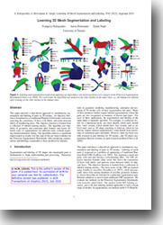

Learning 3D Mesh Segmentation and Labeling

People
Abstract
This paper presents a data-driven approach to simultaneous segmentation and labeling of parts in 3D meshes. An objective function is formulated as a Conditional Random Field model, with terms assessing the consistency of faces with labels, and terms between labels of neighboring faces. The objective function is learned from a collection of labeled training meshes. The algorithm uses hundreds of geometric and contextual label features and learns different types of segmentations for different tasks, without requiring manual parameter tuning. Our algorithm achieves a significant improvement in results over the state-of-the-art when evaluated on the Princeton Segmentation Benchmark, often producing segmentations and labelings comparable to those produced by humans.

Paper
LabelMeshes.pdf, 14MBCitation
Evangelos Kalogerakis, Aaron Hertzmann, Karan Singh, "Learning 3D Mesh Segmentation and Labeling",
ACM Transactions on Graphics, Vol. 29, No. 3, July 2010 (also in SIGGRAPH 2010, Los Angeles, USA)
Bibtex
Presentation
LabelMeshes_web.ppt, 7MBLabelMeshes_web.pdf, 4.4MB..
The above powerpoint and pdf files contain the Siggraph 2010 presentation of our method.
Note: You might need to install the Myriad Pro fonts to view the ppt file correctly.
Labeled PSB Dataset
labeledDb.7z, 63.8MB.
This archive contains the dataset created for our experiments. We call it "Labeled PSB dataset" . The files contain the indices of faces belonging to each label per mesh. The meshes and segmentations come from the Princeton Segmentation Benchmark. The segmentations were then labeled for training and testing, as explained in Section 5, "Data Set" paragraph of our paper. If you plan to use this -Labeled- PSB dataset, please cite both the PSB paper and our paper.
Results
LabelMeshesResults.7z, 3.8MB. This archive contains segmentation and labeling results from one of the leave-one-out-error experiments. See Section 5, "Data Set" paragraph of our paper for more details.
Code & Data
LearningMeshSegmentation.7z, 4.5MB
The above archive contains C++ and Matlab code for our project (see README.TXT). To compile the C++ code, you need to install CLAPACK and Olga Velsker's GCMex external libraries. The code will work only for closed manifold shapes, as in the PSB.
If you are interested in just using the shape features for the PSB meshes based on the above code, I also provide the following archive:
features.7z, 5GB.
This archive contains the shape features for each of the 380 meshes in the PSB dataset. Each file contains F feature vectors, where F is the number of faces. Each feature vector contains the curvature (64 features), PCA (48 features), geodesic shape contexts (270 features), geodesic distance features (15 features), shape diameter (72 features), distance from medial surface (24 features), annd spin images (100 features) in this order. Note that shape contexts were developed for 2D shape matching [Belongie et al. 2002]. Our shape context formulation uses geodesic distances between points and angles between normals to adapt them in the case of 3D meshes. Compared to the original version of the shape context features, I have added more bin configurations for them. These features worked slightly better in later experiments (e.g., they were used in the paper "Probabilistic Reasoning for Assembly-Based 3D Modeling").
Acknowledgements
We would like to particularly thank Xiaobai Chen, Aleksey Golovinskiy, and Thomas Funkhouser for providing their segmentation benchmark and code, as well as Szymon Rusinkiewicz for trimesh2, and Olga Veksler for the graph cuts code. We thank Daniela Giorgi and AIM@SHAPE for providing the meshes from the Watertight Track of SHREC 2007 that are included in the benchmark. We also thank David Fleet and John Hancock for computing resources, and Olga Vesselova for proofreading. This project was funded by NSERC, MITACS, CFI, and the Ontario MRI. This work was done while Aaron Hertzmann was on a sabbatical visit at Pixar Animation Studios.